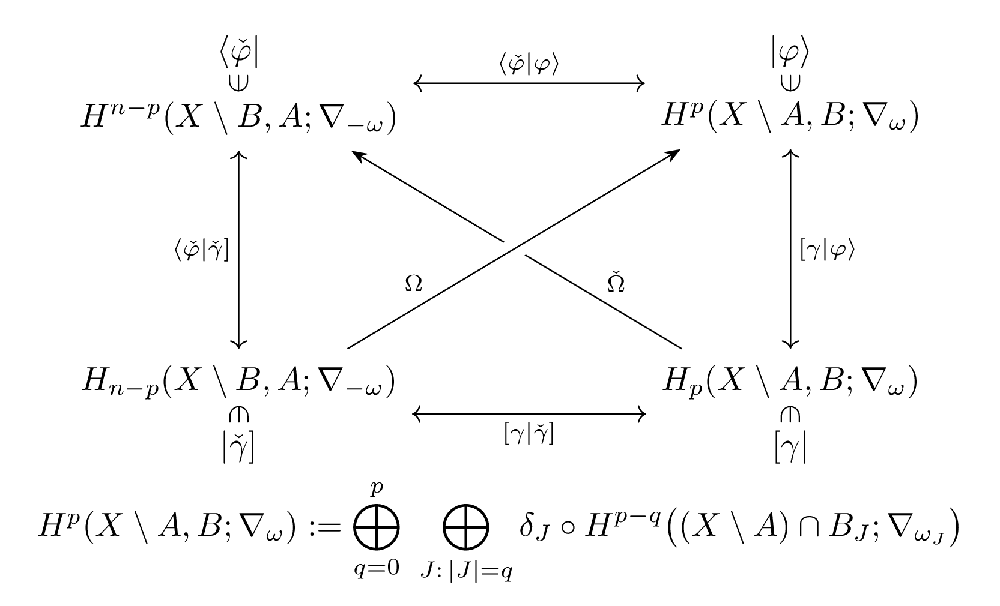
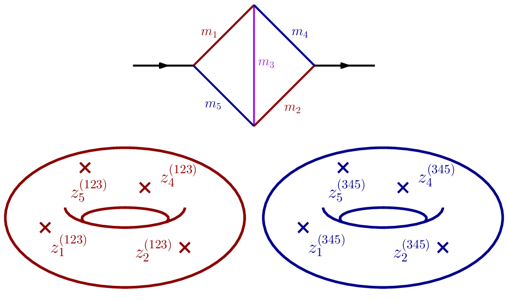
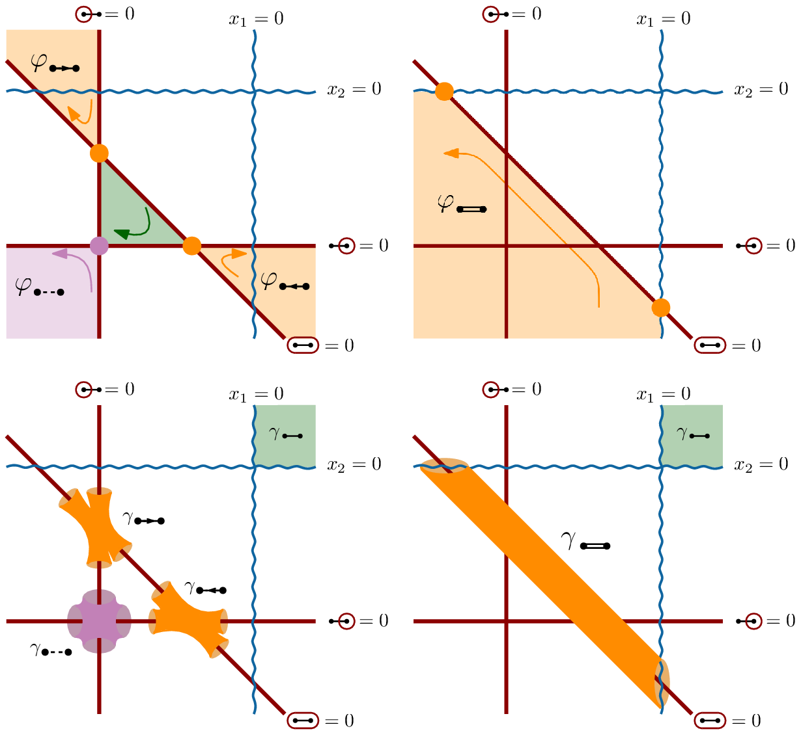

Scattering amplitudes and cosmological correlators are built from integrals, and those integrals are periods: pairings between twisted cycles and twisted differential forms. I study them through relative twisted (co)homology, a framework in which the physical, dimensionally regulated integrals are treated directly and their differential equations, bases and analytic structure follow from geometry.
Research

Feynman integrals from twisted (co)homology
With Simon Caron-Huot, I developed relative twisted (co)homology for Feynman integrals. Differential equations follow from this structure alone, and the intersection number, which generalizes generalized unitarity, can be used in place of integration by parts. With Sebastian Mizera, I showed that the differential equations are fixed exactly by the opposite limit ε → ∞, giving an algorithm for intersection numbers that works for any geometry.
Papers: 2104.06898 · 2112.00055 · 1910.11852 · 2605.29789


Elliptic and higher-genus geometry
Beyond polylogarithms, integrals depend on elliptic curves and higher-genus surfaces. I extended relative twisted (co)homology to elliptic Feynman integrals, where the differential equations factorize loop by loop, and constructed canonical differential equations for the five-mass kite, the most general two-loop self-energy. The same tools give a double copy for Riemann–Wirtinger integrals, which share their function space with string amplitudes, at genus one and at any genus.
Papers: 2210.09898 · 2401.14307 · 2312.02148 · 2509.01598


Cosmological correlators
Correlators in power-law FRW cosmologies are relative twisted integrals. This gives a natural basis and easy differential equations; the split of the basis into physical and unphysical parts is fixed by the geometry of unitarity cuts; and kinematic flow, first found empirically, follows from the flow of cuts. A graphical coaction organizes the derivatives and discontinuities of FRW correlators; you can explore it at frwcoaction.ca.
Papers: 2308.03753 · 2411.09695 · 2508.11568 · 2503.23579 · 2603.25703 · 2606.13627


Also
Symbol alphabets and cluster algebras in QCD (2506.11895), surfaceology for Yukawa theory (2406.04411), five-dimensional spinor helicity (2405.09533), energy correlators (2509.22782 · 2012.01406) and direct-to-symbol integration from Landau analysis (2609.15952).